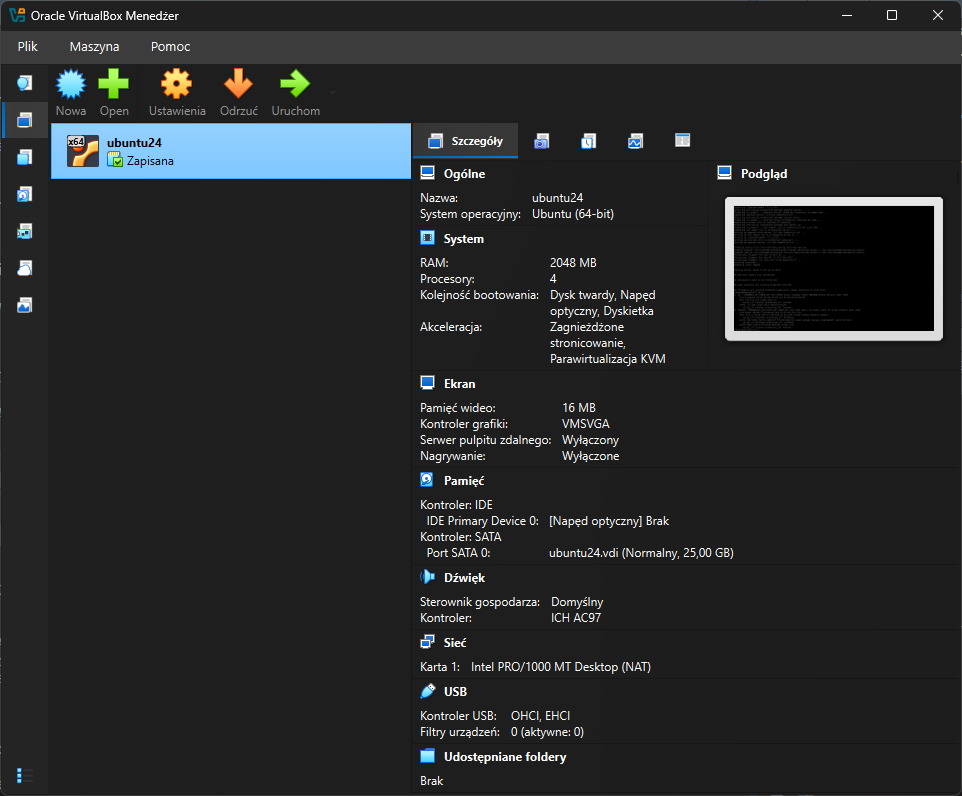
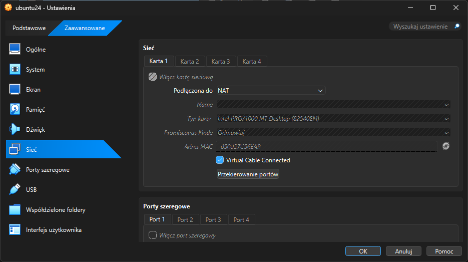
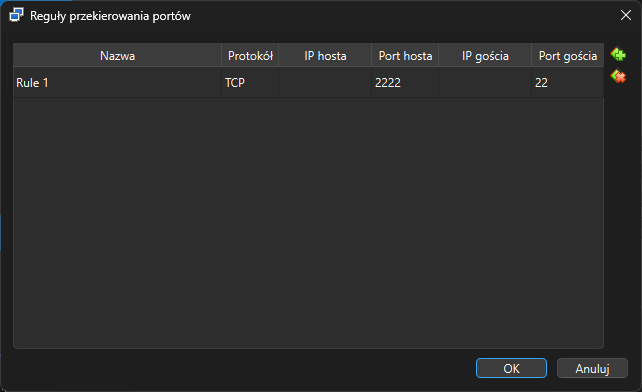

2 Wprowadzenie do linuxa
Autor: Łukasz Wawrowski
2.1 Maszyny wirtualne
Wirtualizacja to technologia, która pozwala na uruchomienie wielu systemów operacyjnych (tzw. Guest OS) na jednej fizycznej maszynie (Host OS) przy wykorzystaniu warstwy pośredniczącej zwanej Hypervisorem.
Na zajęciach z technologii chmurowych skupimy się na dwóch najpopularniejszych podejściach w środowisku Windows: VirtualBox oraz WSL.
2.1.1 Oracle VM VirtualBox
VirtualBox to klasyczne podejście do wirtualizacji. Tworzy on kompletną, odizolowaną “maszynę w maszynie” z własnym wirtualnym BIOS-em, dyskiem i kartą sieciową.
Jak to działa? VirtualBox działa jako aplikacja w systemie Windows. Rezerwuje określoną ilość RAM-u i mocy procesora wyłącznie dla Linuxa.
- Izolacja: Jeśli “zepsujesz” coś w Linuxie, Twój Windows pozostaje całkowicie bezpieczny.
- Migawki (Snapshots): Możesz zapisać stan maszyny przed ryzykowną operacją i wrócić do niego w sekundę.
- Pełny interfejs: Możesz zainstalować wersję Linuxa z pulpitem (GUI).
- Jest dość “ciężki” dla podzespołów laptopa.
2.1.2 Windows Subsystem for Linux (WSL 2)
WSL to “magia” od Microsoftu, która pozwala uruchamiać środowisko Linux bezpośrednio w Windowsie, bez narzutu pełnej maszyny wirtualnej.
WSL 2 korzysta z lekkiej maszyny wirtualnej opartej na technologii Hyper-V, ale robi to w sposób niemal niezauważalny. Linux i Windows współdzielą zasoby dynamicznie.
- Szybkość: Linux uruchamia się w kilka sekund.
- Integracja: Możesz przeglądać pliki Linuxa w Eksploratorze Windows i odwrotnie.
- Niskie zużycie zasobów: Pobiera tyle RAM-u, ile faktycznie potrzebuje w danej chwili.
- Trudniej o pełną izolację; niektóre zaawansowane funkcje sieciowe mogą być trudniejsze do skonfigurowania niż w VirtualBox.
2.1.3 Instalacja
Pobranie obrazu Linuxa - Ubuntu Server 24.04.4 LTS

W celu umożliwienia łączenia się z zainstalowanym systemem, tak jakby to była maszyna zdalna to należy ustawić przekierowanie portów w ustawieniach sieci.


Wówczas możemy zalogować się do uruchomionej maszyny np. przez MS PowerShell lub PuTTy tak jakby to był serwer zdalny.
ssh -p 2222 lukasz@localhost2.2 Podstawowe komendy Linux
Pracujemy na Ubuntu Server 24.04 LTS. Jest to system typu headless — bez interfejsu graficznego. Administracja odbywa się wyłącznie przez terminal.
W środowisku chmurowym (Azure, AWS, GCP) 99% operacji wykonuje się dokładnie w taki sposób.
2.2.1 Dostęp do serwera i uprawnienia
SSH – zdalne logowanie
ssh user@hostSSH (Secure Shell) to protokół umożliwiający bezpieczne połączenie z serwerem.
Składnia:
ssh NAZWA_UŻYTKOWNIKA@ADRES_IPPrzykład:
ssh student@192.168.56.10Co się stanie przy pierwszym połączeniu?
- System zapyta o potwierdzenie odcisku klucza (fingerprint)
- Wpisujesz
yes - Podajesz hasło użytkownika
Wylogowanie:
exitlub skrót:
Ctrl + D2.2.2 sudo – uprawnienia administratora
Linux rozróżnia:
- zwykłego użytkownika
- administratora (root)
Polecenie:
sudo KOMENDApozwala wykonać komendę jako administrator.
Przykład:
sudo apt updatePo wpisaniu sudo:
- system poprosi o hasło
- hasło NIE będzie widoczne (to normalne)
2.2.3 Nawigacja po systemie plików
Linux ma strukturę drzewa katalogów zaczynającą się od:
/(tzw. root filesystem)
Najważniejsze katalogi:
| Katalog | Znaczenie |
|---|---|
/home |
katalogi użytkowników |
/etc |
pliki konfiguracyjne |
/var |
logi i dane aplikacji |
/bin |
podstawowe programy |
/usr |
aplikacje systemowe |
/opt |
własne programy |
Więcej informacji na ten temat można znaleźć na stronie Filesystem Hierarchy Standard
Sprawdzanie lokalizacji
pwd(Present Working Directory)
Lista plików
ls
ls -l
ls -la-l→ tryb szczegółowy-a→ pokazuje pliki ukryte (zaczynające się od.)
Zmiana katalogu
cd nazwa_katalogu
cd ..
cd ~
cd /..→ poziom wyżej~→ katalog domowy użytkownika/→ katalog główny
2.2.3.1 Zadanie
- Przejdź do /etc
- Wróć do katalogu domowego
- Wejdź do /var/log
- Sprawdź zawartość przez ls -la
2.2.4 Tworzenie i usuwanie plików
Tworzenie katalogu
mkdir nazwaTworzenie pustego pliku
touch plik.txtUsuwanie
rm plik.txt
rm -r katalogUwaga!
Polecenie rm -rf / usuwa rekurencyjnie i bez pytania wszystko zaczynając od katalogu głównego (nie testować).
2.2.4.1 Zadanie
- W katalogu domowym utwórz katalog
projekt_chmura/logi - Wejdź do projekt_chmura
- Utwórz plik config.txt
- Sprawdź strukturę plików
2.2.5 Edycja plików
nano – edytor tekstu
nano plik.txtNajważniejsze skróty:
Ctrl + O→ zapiszCtrl + X→ wyjdźCtrl + K→ wytnij linięCtrl + U→ wklej
Odczyt zawartości pliku
cat plik.txt
less plik.txtless pozwala przewijać:
- strzałki
- q → wyjście
2.2.5.1 Zadanie
- W pliku config.txt wpisz:
Imię:
Data:
Nazwa serwera:- Zapisz i wyjdź.
- Wyświetl zawartość.
2.2.6 Transfer plików – scp
Kopiowanie z lokalnego komputera na serwer:
scp plik.txt user@ip:/home/user/Kopiowanie z serwera na lokalny komputer:
scp user@ip:/home/user/plik.txt .. oznacza bieżący katalog.
2.2.6.1 Zadanie
- Na serwerze utwórz plik np.:
echo "To jest test transferu" > transfer.txt- Pobierz plik na swój komputer.
- Zmień jego zawartość lokalnie i odeślij go z powrotem na serwer.
- Zaloguj się ponownie i sprawdź zawartość.
2.2.7 Zarządzanie pakietami (apt)
Ubuntu używa menedżera pakietów apt.
Aktualizacja listy pakietów:
sudo apt updateAktualizacja systemu:
sudo apt upgradeInstalacja programu:
sudo apt install htopUsunięcie:
sudo apt remove htop2.2.7.1 Zadanie
Zainstaluj pakiet neofetch, uruchom go, a następnie odinstaluj.
2.2.8 Monitorowanie systemu
Sprawdzenie IP
ip aZużycie zasobów
top
htopWyjście z top → q
2.2.9 Procesy
Lista procesów:
ps auxZabicie procesu:
kill PID2.2.10 Uprawnienia plików (chmod)
Sprawdzenie:
ls -lPrzykład wyniku:
-rw-r--r-- 1 student student 1234 plik.txtCo oznacza rwx?
| Symbol | Znaczenie | Wartość |
|---|---|---|
| r | read | 4 |
| w | write | 2 |
| x | execute | 1 |
Układ:
rwx rwx rwx
u g o- u → user
- g → group
- o → others
Czyli:
rwx = 4 + 2 + 1 = 7
rw- = 4 + 2 = 6
r-- = 4Przykład
chmod 600 klucz.pem600 oznacza:
- właściciel: read + write
- reszta: brak dostępu
Najczęściej używane w DevOps
| Wartość | Zastosowanie |
|---|---|
| 755 | katalog aplikacji |
| 644 | pliki konfiguracyjne |
| 600 | klucze prywatne |
| 700 | ~/.ssh |
| 750 | katalogi zespołowe |
| 1777 | /tmp |
2.2.10.1 Zadanie
- Ustaw prawa odczytu i zapisu dla usera i tylko odczytu dla pozostałych dla pliku
config.txt. - Utwórz katalog
sekretyi ustaw pełen dostęp tylko dla usera. - Sprawdź prawa przez
ls -l. - Dlaczego katalog potrzebuje
x, żeby do niego wejść?
2.2.11 Usługi systemowe (systemd)
Linux używa systemu zarządzania usługami systemd.
Sprawdzenie statusu SSH:
systemctl status sshRestart:
sudo systemctl restart sshWłączenie przy starcie systemu:
sudo systemctl enable ssh2.2.12 Logi systemowe
Nowoczesne systemy używają journalctl.
Wyświetlenie logów:
journalctlLogi konkretnej usługi:
journalctl -u sshPodgląd na żywo:
journalctl -f2.2.12.1 Zadanie
Otwórz dwa okienka konsoli. W jednym z nich uruchom podgląd logów na żywo, a w drugim spróbuj zalogować się błędnym hasłem. Co się stało w logach?
2.2.13 Klucze SSH - logowanie bez hasła
W środowiskach produkcyjnych oraz w pracy DevOps nie używa się logowania hasłem, tylko kluczy kryptograficznych.
Dlaczego?
- hasła można zgadnąć lub wyciec
- klucze są bezpieczniejsze
- umożliwiają automatyzację (CI/CD, Ansible)
- pozwalają wyłączyć logowanie hasłem na serwerze
SSH używa kryptografii asymetrycznej:
Powstają dwa klucze:
- klucz prywatny – zostaje na Twoim komputerze
- klucz publiczny – trafia na serwer
Podczas logowania:
- Serwer sprawdza, czy Twój klucz publiczny jest zapisany w
authorized_keys - Jeśli tak — wysyła wyzwanie kryptograficzne
- Twój komputer podpisuje je kluczem prywatnym
- Jeśli podpis się zgadza — zostajesz zalogowany
Klucz prywatny nigdy nie może trafić na serwer ani do repozytorium.
Generowanie klucza SSH (na komputerze lokalnym) polega na wykonaniu na swoim komputerze (nie na serwerze) polecenia:
ssh-keygenZostaniesz zapytany o:
Enter file in which to save the key:Naciśnij Enter, aby zaakceptować domyślną lokalizację:
~/.ssh/id_rsaNastępnie możesz ustawić hasło do klucza (passphrase) — w środowisku laboratoryjnym można zostawić puste.
W katalogu ~/.ssh pojawią się dwa pliki:
| Plik | Znaczenie |
|---|---|
id_rsa |
klucz prywatny (tajny) |
id_rsa.pub |
klucz publiczny (do wgrania na serwer) |
Sprawdź:
ls -la ~/.sshKolejnym krokiem jest wgranie klucza na serwer.
Najprostsza metoda:
ssh-copy-id student@IP_SERWERASystem:
- poprosi o hasło do serwera (ostatni raz)
- automatycznie dopisze klucz do pliku
authorized_keys
Polecenie ssh-copy-id loguje się na serwer i dopisuje zawartość pliku:
~/.ssh/id_rsa.pubdo pliku:
~/.ssh/authorized_keysTo właśnie ten plik decyduje, kto może logować się kluczem.
Gdy ssh-copy-id nie działa to na komputerze lokalnym trzeba uruchomić:
cat ~/.ssh/id_rsa.pubSkopiuj całą zawartość (jedna linia zaczynająca się od ssh-rsa).
Na serwerze:
mkdir -p ~/.ssh
nano ~/.ssh/authorized_keysWklej klucz jako osobną linię i zapisz plik.
SSH odmawia logowania, jeśli prawa dostępu są zbyt szerokie.
Na serwerze wykonaj:
chmod 700 ~/.ssh
chmod 600 ~/.ssh/authorized_keysWyjaśnienie:
| Element | Wymagane prawa | Dlaczego |
|---|---|---|
~/.ssh |
700 | tylko właściciel może wejść |
authorized_keys |
600 | tylko właściciel może czytać/zapisywać |
Sprawdź:
ls -la ~/.sshTeraz można zrobić test logowania bez hasła. Wyloguj się:
exitZaloguj ponownie:
ssh student@IP_SERWERAJeśli konfiguracja jest poprawna:
- system nie zapyta o hasło
- logowanie nastąpi automatycznie
Dodatkowo można wyłączyć logowanie hasłem (opcjonalnie).
Na serwerze:
sudo nano /etc/ssh/sshd_configZnajdź:
PasswordAuthentication yesZmień na:
PasswordAuthentication noZrestartuj SSH:
sudo systemctl restart sshWykonuj to tylko wtedy, gdy logowanie kluczem działa poprawnie.
2.2.14 Samodzielna pomoc
Jeśli nie wiesz, co robi komenda:
man komendaPrzykład:
man scpSzybkie wyszukiwanie w manualu:
/słowoWyjście:
q